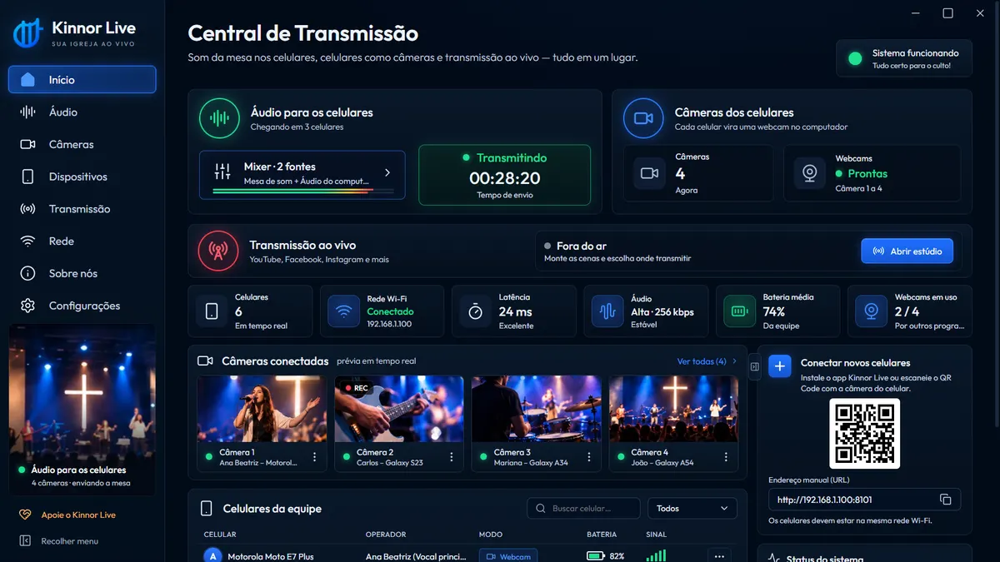

GUIA PASSO A PASSO
Como transmitir o culto usando celulares, do zero.
Neste guia você monta a transmissão da igreja com um computador com Windows, os celulares da equipe e o Wi-Fi — sem comprar câmeras e sem gastar nada com programas.
- 9 passos
- Custo zero em programas
- Para voluntários

ANTES DE COMEÇAR
O que você vai precisar.
PASSO A PASSO
Monte a transmissão da sua igreja.
-
Instale o Kinnor Live no computador
Baixe o instalador na página de download e abra o arquivo. Se o Windows mostrar “O Windows protegeu o computador”, clique em Mais informações e depois em Executar assim mesmo. O instalador já libera o programa no Firewall e cria as webcams “Kinnor Live Câmera 1 a 4” na primeira abertura.
-
Ligue a mesa de som ao computador
Use um cabo P2 da saída da mesa — rec out, auxiliar ou fone — até a entrada de áudio do computador. Se a mesa ou a interface for USB, basta conectar. No Kinnor Live, abra Áudio, clique em Adicionar fonte e escolha essa entrada.
Confira o medidor: ele deve ficar no verde e tocar o amarelo nos momentos mais fortes. Vermelho significa distorção — baixe o volume na mesa ou no mixer.
-
Envie o som para os celulares
Clique em Enviar para os celulares. A partir daí o som da mesa chega aos celulares da equipe pelo Wi-Fi — para o retorno no fone e para os stories gravados com o som da mesa. “Equilibrado” é o ajuste recomendado para a maioria das igrejas.
-
Conecte os celulares da equipe
Cada voluntário instala o app Kinnor Live (veja as opções na página de download), entra no mesmo Wi-Fi do computador e aponta a câmera para o QR Code da tela Início ou Rede. Pronto: o celular aparece no painel.
-
Transforme os celulares em câmeras
No app, deslize até o modo WEBCAM. Cada celular vira uma câmera do Windows, de Câmera 1 a Câmera 4. Coloque-os em suportes nas posições do culto — púlpito, louvor, plano geral — e ajuste zoom, lente e qualidade pela tela Dispositivos. Veja ideias em câmera para igreja.
-
Monte as cenas
Na tela Transmissão, use as cenas prontas (Culto, Louvor, Pregação, Aguarde) ou crie as suas. Em cada cena, adicione as câmeras em Fontes e arraste na pré-visualização para posicionar. Escolha o layout horizontal ou vertical.
-
Adicione os destinos
Em Destinos, clique em Adicionar destino, escolha a plataforma — YouTube, Facebook, Instagram, TikTok, X, Twitch, Kick ou RTMP próprio — e cole a chave de transmissão que a plataforma fornece. Dá para adicionar várias plataformas e contas.
-
Faça um teste
Antes do primeiro culto, faça uma live de teste privada ou não listada. Confira se o som está limpo, se as câmeras estão firmes e se a internet aguenta a qualidade escolhida.
-
Entre ao vivo
Clique em Iniciar transmissão. Prepare a próxima cena na pré-visualização e coloque no ar com corte ou transição. Ative Gravar no computador para guardar o culto em MP4.
Bônus: stories do culto com o som da mesa
Enquanto a transmissão acontece, outros celulares da equipe podem gravar stories e reels no modo Gravar com a mesa: o celular filma e o áudio vem limpo, direto da mesa. Ao salvar, é só tocar em Instagram ou WhatsApp.
Checklist do domingo
- Celulares carregados e nos suportes.
- Computador e celulares no mesmo Wi-Fi.
- Medidor da mesa no verde.
- “Enviar para os celulares” ativo.
- Cenas conferidas na pré-visualização.
- Destinos com as chaves certas.
- Gravar no computador ativado.
DÚVIDAS FREQUENTES
Perguntas sobre transmitir o culto.
Dá para transmitir o culto só com celular?
Com o Kinnor Live, os celulares são as câmeras e o computador com Windows faz a transmissão. Assim você tem várias câmeras, o som da mesa e cenas, sem comprar equipamento.
Qual programa usar para transmitir o culto de graça?
O Kinnor Live é gratuito, feito para igrejas, e junta câmeras sem fio com celulares, som da mesa e transmissão para várias redes ao mesmo tempo, sem marca d'água.
Como levar o som da mesa para a transmissão?
Ligue a saída da mesa na entrada de áudio do computador com um cabo P2, ou use uma mesa/interface USB, e adicione essa entrada no mixer do Kinnor Live.
Quantas câmeras posso usar?
Até quatro celulares como câmeras ao mesmo tempo.
Precisa de internet boa?
Para a live, sim: a transmissão usa a internet de envio (upload) da igreja. As câmeras e o som funcionam na rede Wi-Fi local, sem gastar internet.
COMECE HOJE
Tudo pronto para o primeiro culto ao vivo?
Baixe o Kinnor Live grátis e siga o guia com a sua equipe.